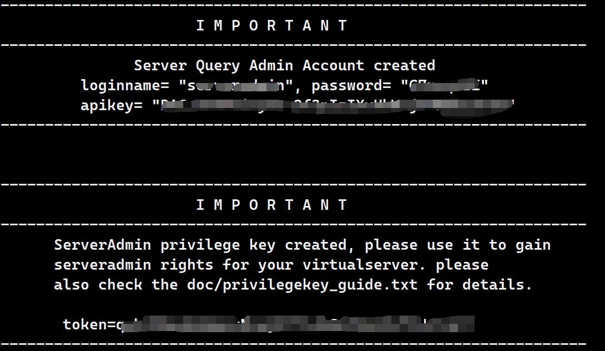
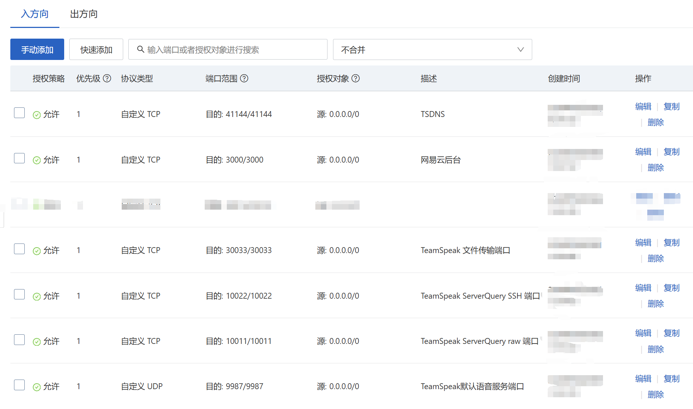
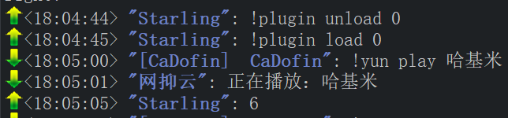

本人服务器配置为 CentOS 7.9 64 位。
部分内容有时效性，不能保证可以复现。
首先 ssh 登录到我们的服务器。
# 部署 TeamSpeak
# 创建一个新用户
这是为了方便管理，而且部分操作不方便通过 root 账号完成。
这里我们创建一个名为 teamspeak 的账户：
# 新建用户 teamspeak | ||
useradd teamspeak | ||
# 给予 sudo 权限 | ||
usermod -a -G sudo teamspeak | ||
# 设置密码 | ||
passwd teamspeak | ||
# 切换用户并定位到家目录 | ||
su teamspeak | ||
cd ~ |
# 下载并解压服务端
# 下载
https://www.teamspeak.com/zh-CN/downloads/#server
以上为官网下载地址，可以在那里查看最新版本，可以选择从官网下载下来再传输到服务器上，也可以直接命令行下载：
# 需要服务器已安装 wget | ||
wget https://files.teamspeak-services.com/releases/server/3.13.7/teamspeak3-server_linux_amd64-3.13.7.tar.bz2 |
如果你的服务器没有安装wget
注意使用 root 账号。
# 使用 yum 安装 wget | ||
sudo yum install -y wget |
# 解压
# 使用 tar 命令解压 | ||
tar -xvf teamspeak3-server_linux_amd64-3.13.7.tar.bz2 |
如果解压报错Error is not recoverable: exiting now
需要安装 bz2 相关内容，使用 root 账号：
# 使用 yum 安装 bzip2 | ||
sudo yum install -y bzip2 |
创建 teamspeak 目录，把解压后的东西塞进去：
mkdir teamspeak | ||
mv teamspeak3-server_linux_amd64 teamspeak-rf | ||
rm -rf teamspeak3-server_linux_amd64 | ||
cd teamspeak |
# 启动服务端
# 同意许可协议
# 没什么好说的，就是同意许可协议 | ||
touch .ts3server_license_accepted |
# 启动与配置
# 启动服务端 | ||
./ts3server_startscript.sh start |
第一次启动，会显示包括 token 在内的重要的信息，记得保存！！！
然后 Ctrl + C 退出。

# 开放端口
我们需要为服务器开放一些端口，否则无法与客户端进行通讯。
以下是端口列表，不仅仅要在服务器开放，还要在云服务提供商的控制台的安全组中开放。
| 端口 | 协议 | 说明 |
|---|---|---|
| 9987 | UDP | TeamSpeak 语音服务端口 |
| 10011 | TCP | TeamSpeak ServerQuery raw 端口 |
| 10022 | TCP | TeamSpeak ServerQuery SSH 端口 |
| 30033 | TCP | TeamSpeak 文件传输端口 |
| 41144 | TCP | TSDNS 服务器端口 |
| 58913 | TCP | 机器人网站后台端口（不开无所谓） |
| 3000 | TCP | 网易云 api 后台端口（后面要用，先放开这个端口） |
在服务器开放端口：
firewall-cmd --zone=public --add-port=9987/udp --permanent && firewall-cmd --reloa | ||
firewall-cmd --zone=public --add-port=10011/tcp --permanent && firewall-cmd --reloa | ||
firewall-cmd --zone=public --add-port=10022/tcp --permanent && firewall-cmd --reloa | ||
firewall-cmd --zone=public --add-port=30033/tcp --permanent && firewall-cmd --reloa | ||
firewall-cmd --zone=public --add-port=41144/tcp --permanent && firewall-cmd --reloa | ||
firewall-cmd --zone=public --add-port=3000/tcp --permanent && firewall-cmd --reloa |
在安全组开放端口：

# 设置开机自启
注意使用 root 账号。
# 新建 teamspeak.service | ||
vim /etc/systemd/system/teamspeak.service |
然后 i 进入 INSERT 模式，写文件：
[Unit]
Description=Teamspeak Service
Wants=network.target
[Service]
WorkingDirectory=/home/teamspeak
ExecStart=/home/teamspeak/teamspeak/ts3server_minimal_runscript.sh
ExecStop=/home/teamspeak/teamspeak/ts3server_startscript.sh stop
ExecReload=/home/teamspeak/teamspeak/ts3server_startscript.sh restart
Restart=always
RestartSec=15
[Install]
WantedBy=multi-user.target
然后 Esc ， :wq! 强制保存并退出。
# 更新配置 | ||
systemctldaemon-reload | ||
# 设置开机启动 | ||
systemctl enable teamspeak.service | ||
# 启动服务 | ||
systemctl start teamspeak.service | ||
# 查看状态，如果有 active (running) 说明成功了 | ||
systemctl status teamspeak.service |
# 客户端连接
这个时候就可以去官网设置服务器别名了，或者也可以直接裸连服务器地址。
连接后使用上面保存的 token 设置自己为超级管理员。
随后自定义各种设置。
# 部署 TS3AudioBot 并添加网易云插件
# 安装 ffmpeg
yum -y install epel-release | ||
rpm -Uvh http://li.nux.ro/download/nux/dextop/el7/x86_64/nux-dextop-release-0-5.el7.nux.noarch.rpm | ||
yum -y install ffmpeg opus-devel |
# 下载 TS3AudioBot 本体与插件并解压
不要下载官方的，因为官方给的 linux 版编译环境有问题导致后面不能正常加载插件
下载 ZHANGTIAOYAO1 重构后的版本与 FiveHair 修改后的网易云插件。
命令行下载：
# 切换 teamspeak 账号 | ||
su teamspeak | ||
cd ~ | ||
wget https://github.com/ZHANGTIANYAO1/TS3AudioBot-NetEaseCloudmusic-plugin/releases/download/1.1.0/with.TS3Bot.linux-x64.zip | ||
wget https://github.com/FiveHair/TS3AudioBot-NetEaseCloudmusic-plugin-UNM/releases/download/2.0.3.1/YunPlugin-UNM-2.0.3.1.zip |
解压本体与插件并拷贝插件至本体的 plugins 目录：
unzip with.TS3Bot.linux-x64.zip | ||
mv linux-x64 TS3AudioBot | ||
unzip YunPlugin-UNM-2.0.3.1.zip | ||
cd TS3AudioBot/plugins | ||
rm * | ||
cd ~ | ||
mv YunPlugin-UNM.dll TS3AudioBot/plugins/ | ||
mv YunSettings.ini TS3AudioBot/plugins/ |
# 配置 TS3AudioBot 启动
cd TS3AudioBot | ||
chmod 755 TS3AudioBot | ||
./TS3AudioBot |
随后根据引导设置管理员的 uid（在客户端上面 “权限” 菜单中打开 “所有客户端列表” 可以看到服务器所有人的 uid）、服务器 ip、密码等。
然后直接 Ctrl + C 结束进程。
# 设置开机自启
注意切换 root 账号：
# ts3audiobot.service | ||
vim /etc/systemd/system/ts3audiobot.service |
然后 i 进入 INSERT 模式，写文件：
[Unit]
Description=TS3AudioBot
After=teamspeak.service
[Service]
WorkingDirectory=/home/teamspeak/TS3AudioBot/
ExecStart=/home/teamspeak/TS3AudioBot/TS3AudioBot
Restart=always
RestartSec=15
[Install]
WantedBy=multi-user.target
然后 Esc ， :wq! 强制保存并退出。
# 更新配置 | ||
systemctldaemon-reload | ||
# 设置开机启动 | ||
systemctl enable ts3audiobot.service | ||
# 启动服务 | ||
systemctl start ts3audiobot.service | ||
# 查看状态，如果有 active (running) 说明成功了 | ||
systemctl status ts3audiobot.service |
# 部署网易云 API
# 安装 git
sudo yum install -y git | ||
# 设置用户名 | ||
git config --global user.name "名字" | ||
# 设置邮箱 | ||
git config --global user.email "邮箱" |
# 安装 Node.js 和 npm
sudo yum install -y nodejs | ||
sudo yum install -y npm |
# 搭建 API
注意还是切换到 teamspeak 账号：
su teamspeak | ||
cd ~ | ||
sudo git clone git@gitlab.com:Binaryify/NeteaseCloudMusicApi.git |
由于网易云的赶尽杀绝，大部分 API 都寄了，而这个其实也寄了。但是虽然 github 上改仓库删除归档了，我们依旧能在 gitlab 找到全部源码。
cd NeteaseCloudMusicApi | ||
sudo npm install | ||
sudo node app.js |
此时显示 server running ... 即为配置成功，按 Ctrl + C ，退出。
# 设置开机自启
注意切换 root 用户：
# netease.service | ||
vim /etc/systemd/system/netease.service |
然后 i 进入 INSERT 模式，写文件：
[Unit]
Description=Netease Cloud Music API Service
After=network.target
[Service]
WorkingDirectory=/home/teamspeak/NeteaseCloudMusicApi/
ExecStart=/usr/bin/node /home/teamspeak/NeteaseCloudMusicApi/app.js
Restart=always
RestartSec=15
[Install]
WantedBy=multi-user.target
然后 Esc ， :wq! 强制保存并退出。
# 更新配置 | ||
systemctldaemon-reload | ||
# 设置开机启动 | ||
systemctl enable netease.service | ||
# 启动服务 | ||
systemctl start netease.service | ||
# 查看状态，如果有 active (running) 说明成功了 | ||
systemctl status netease.service |
# 将插件与 API 连接
注意还是切回 teamspeak 账号：
cd ~ | ||
cd TS3AudioBot/plugins | ||
vim YunSettings.ini |
将链接修改为本地：
# 如果原本等号后面有东西就删掉
WangYiYunAPI_Address = http://localhost:3000
# 设置机器人指令权限
设置谁能操控机器人谁能点歌，在 /home/teamspeak/TS3AudioBot 目录下的 rights.toml 中有详细的说明与设置方法。
# 启动机器人
之后的操作仅在客户端就能完成。
聊天框输入 !plugin list ，找到网易云插件（状态应该是 RDY 就绪）的编号（假设是 #0）。
输入 !plugin load 0 （后面数字得看编号）加载插件。
然后再查看插件列表，网易云插件的状态应该为（+ON 运行）
之后输入 !yun login 后根据机器人的头像与简洁设置登录网易云（请给机器人管理员权限）。
大功告成！
